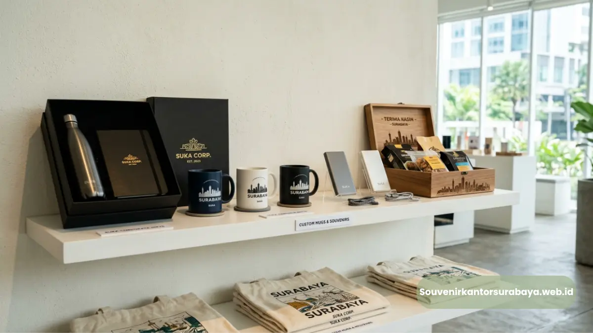
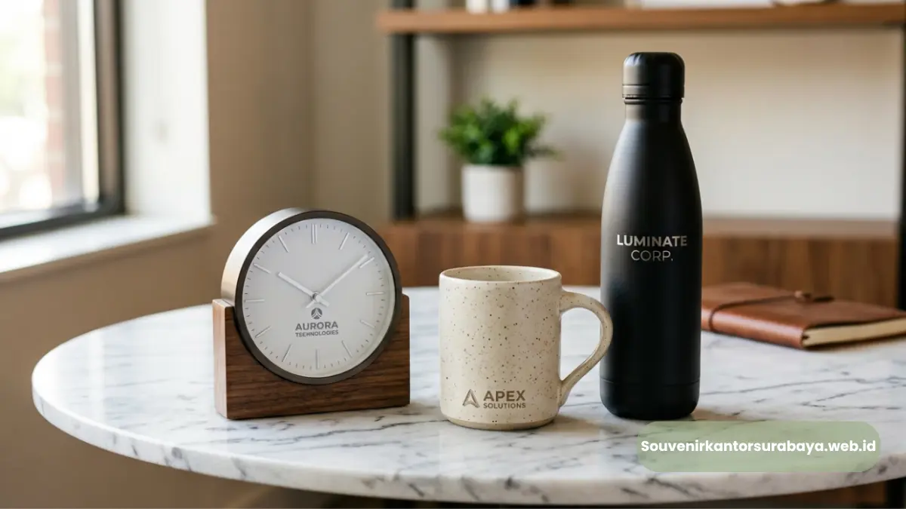

Ragam souvenir acara kantor favorit perusahaan di Surabaya meliputi alat tulis kantor, tumbler custom logo, flashdisk branding, dan hampers korporat.
Ragam souvenir acara kantor favorit perusahaan di Surabaya meliputi alat tulis kantor, tumbler custom logo, flashdisk branding, dan hampers korporat yang dipilih sesuai jenis acara dan target penerima. Setiap jenis memiliki karakteristik dan momen penggunaan yang berbeda.
- Alat tulis kantor cocok untuk acara seminar dan pelatihan internal
- Tumbler custom logo populer karena mendukung gaya hidup sehat penerima
- Flashdisk branding relevan untuk acara yang melibatkan distribusi materi digital
- Hampers korporat sering dipilih untuk momen apresiasi klien atau akhir tahun
Apa Saja Jenis Souvenir Acara Kantor yang Paling Favorit?
Jenis souvenir acara kantor yang paling favorit di kalangan perusahaan meliputi alat tulis, drinkware, aksesoris teknologi, dan paket hampers yang masing-masing memiliki keunggulan sesuai konteks acara yang diselenggarakan.
Popularitas jenis souvenir ini umumnya didorong oleh tingkat kepraktisan produk dalam mendukung aktivitas kerja sehari-hari, sehingga logo perusahaan yang tercetak pada produk tersebut dapat terus terlihat dalam jangka waktu lama.
Souvenir Apa yang Cocok untuk Acara Seminar Kantor?
Souvenir yang cocok untuk acara seminar kantor adalah produk yang mendukung aktivitas belajar dan pencatatan, seperti notebook, pulpen, dan map folder yang dapat digunakan langsung selama sesi seminar berlangsung.
Beberapa pilihan souvenir yang relevan untuk acara seminar:
- Notebook dan block note: membantu peserta mencatat materi penting selama sesi seminar berlangsung
- Pulpen custom logo: souvenir fungsional yang selalu dibutuhkan peserta di berbagai kesempatan kerja
- Map folder: memudahkan peserta menyimpan materi seminar dalam kondisi rapi dan terorganisir
- Lanyard dan id card: mendukung kebutuhan administrasi acara sekaligus menjadi media branding tambahan
Produk-produk tersebut dipilih karena relevansinya yang tinggi dengan konteks acara, sehingga penggunaannya terasa alami tanpa kesan dipaksakan.
Souvenir Apa yang Cocok untuk Acara Gathering Kantor?

Souvenir acara gathering kantor umumnya merupakan produk yang mencerminkan suasana kebersamaan antar karyawan maupun mitra bisnis.
Souvenir yang cocok untuk acara gathering kantor adalah produk bernuansa apresiasi seperti tumbler, hampers, atau perlengkapan santai yang mencerminkan suasana kebersamaan antar karyawan maupun mitra bisnis.
Beberapa pilihan souvenir yang relevan untuk acara gathering:
- Tumbler dan drinkware: mendukung gaya hidup sehat sekaligus dapat digunakan berulang kali oleh penerima
- Hampers berisi produk pilihan: memberikan kesan lebih personal dan istimewa dibanding souvenir tunggal
- Powerbank atau aksesoris praktis: relevan untuk kebutuhan mobilitas karyawan di luar jam kerja
- Merchandise custom logo lainnya: dapat disesuaikan dengan tema khusus acara gathering tahunan
Pemilihan souvenir untuk gathering biasanya lebih fleksibel dibanding acara formal, sehingga perusahaan dapat mengeksplorasi produk yang lebih personal dan menyenangkan bagi penerima.
Baca Juga
Bagaimana Menyesuaikan Souvenir dengan Target Penerima?
Menyesuaikan souvenir dengan target penerima dilakukan dengan mempertimbangkan siapa yang akan menerima souvenir tersebut, apakah karyawan internal, klien eksternal, atau tamu undangan resmi dari instansi lain.
Beberapa pertimbangan dalam menyesuaikan souvenir dengan target penerima:
Souvenir untuk Karyawan Internal
Souvenir untuk karyawan internal dapat lebih fleksibel dan personal, seperti perlengkapan kerja sehari-hari yang mendukung produktivitas di kantor.
Souvenir untuk Klien dan Mitra Bisnis
Souvenir untuk klien sebaiknya memiliki kesan lebih eksklusif dan elegan, mengingat produk ini turut mencerminkan citra profesionalisme perusahaan di mata mitra bisnis.
Souvenir untuk Tamu Undangan Resmi
Souvenir untuk tamu undangan resmi umumnya perlu mempertimbangkan aspek formalitas acara, sehingga desain dan kemasan cenderung lebih rapi dan protokoler.
Ragam souvenir acara kantor di Surabaya sangat beragam dan dapat disesuaikan dengan jenis acara serta target penerimanya, mulai dari alat tulis untuk seminar hingga hampers untuk momen apresiasi klien. Penyesuaian yang tepat akan membuat souvenir lebih relevan dan berkesan.

Hawa Nadira
Tim penulis CorporateGifts ID berfokus pada strategi souvenir kantor, merchandise korporat, dan inovasi brand untuk klien B2B.
Keahlian: Branding perusahaan, produksi souvenir, paket event, desain materi promosi.
Artikel Terkait

Cari Souvenir Acara Kantor di Surabaya, Solusi Ada di Sini
Cari souvenir acara kantor di Surabaya yang elegan, sesuai anggaran, dan siap kirim tepat waktu.
Baca Selengkapnya
Ciri Souvenir Acara Kantor Berkesan untuk Perusahaan
Ciri souvenir acara kantor yang berkesan adalah fungsional, material baik, dan konsisten.
Baca Selengkapnya
Kapan Waktu Tepat Cari Souvenir Acara Kantor di Surabaya
Waktu tepat mencari souvenir acara kantor di Surabaya adalah minimal dua hingga empat minggu sebelum hari acara.
Baca Selengkapnya